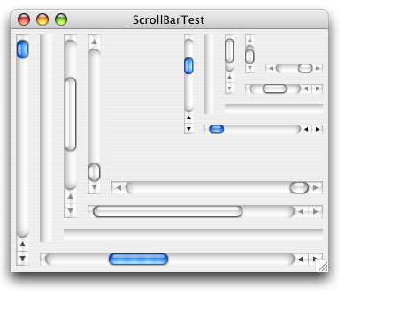

Property |
Type | Notes |
|---|---|---|
|
java.lang.String |
Values: "regular", "small" |
|
java.lang.Boolean |
Use this property for debugging purposes only. |
QuaquaScrollBarUI's look and behave differently depending on the "Appearance" settings made by the user in the Mac OS X "System Preferences" application. These settings influence the location of the arrow buttons and the behavior of clicks in the scroll bar track.

Quaqua scroll bars support the "regular" and the "small" size variant. The size variant can be specified programmaticaly by setting the client property JComponent.sizeVariant, or by setting the font of the scroll bar to either Lucida Grande 13 (for "regular") or Lucida Grande 11 (for "small").
|
For debugging purposes the scroll bars also allow to explicitly specify whether the buttons shall be placed together or not.
|